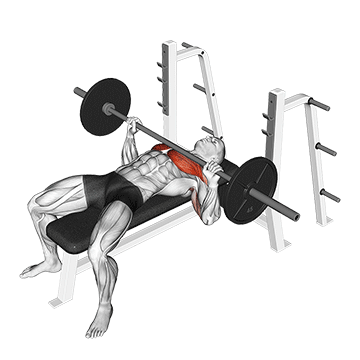
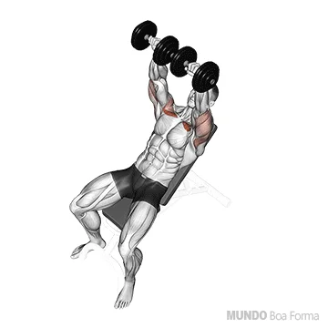
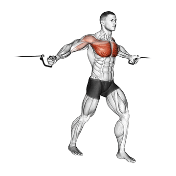
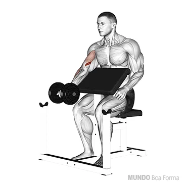
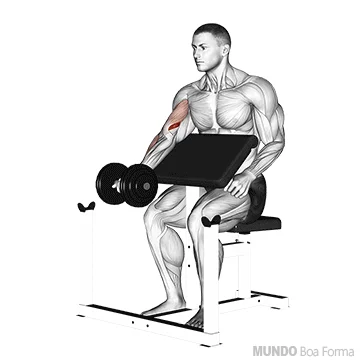

Peito
1. Flexão de braço

Realizar 3 séries de 10-15 repetições
Contrair bem os glúteos e abdomen é essencial;
Mantenha os pés juntos, e as mãos levemente mais afastadas do que a largura dos ombros,inspirar quando descer e expirar quando subir.
2. Supino reto
Realizar 3 séries de 8-12 repetições carga máxima
ACONSELHÁVEL SUPERVISÃO!
imagine que tenha que esmagar o meio da barra forçando suas extremidades por onde está segurando; inspirando, baixe a barra em direçõo ao meio do peito, e suba soltando o ár com força total.
3. Supino inclinado
Realizar 3 séries de 8-12 repetições carga baixa
Com o banco em um angulo de 45°
Mantenha o foco em deixar seus cotovelos alinhados ao peito, inspirando, baixe a carga em direção ao alinhamento do peito, em seguida levante a carga com força em direção ao alinhamento do maxilar expirando.
4. Crucifixo em pé na polia
Realizar 3 séries de 10-12 repetições carga moderada
Coloque a carga máxima em que consiga executar o exercios com perfeição
posicione um dos pés um passo a frente, segure as pegas de maneira que consiga aproximar suas mãos ao maximo, inspire e puxe a carga soutando o ar, baixe a carga inspirando.
o ideal é que após cada série troque o pé que estava a frente.

 
